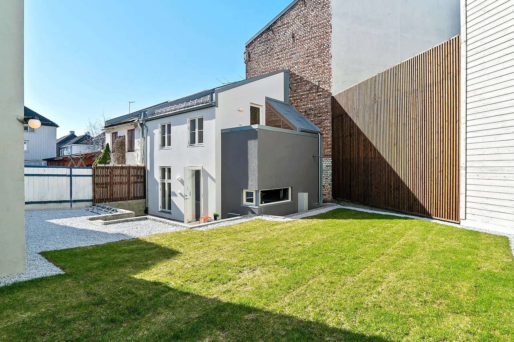
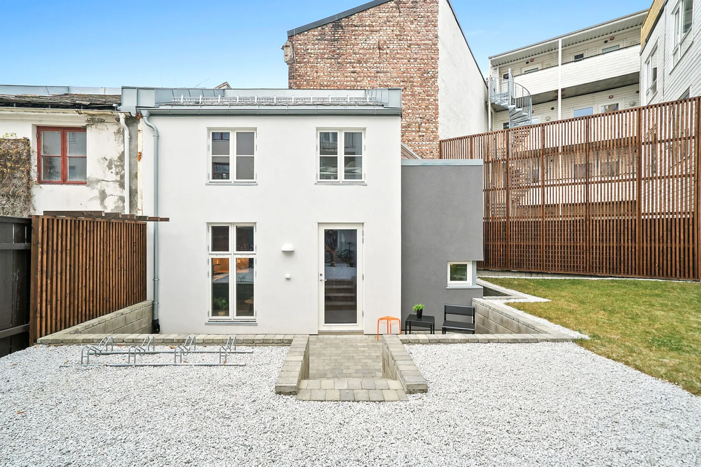
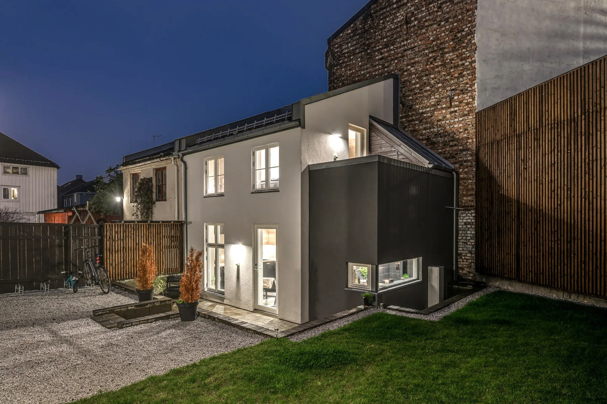
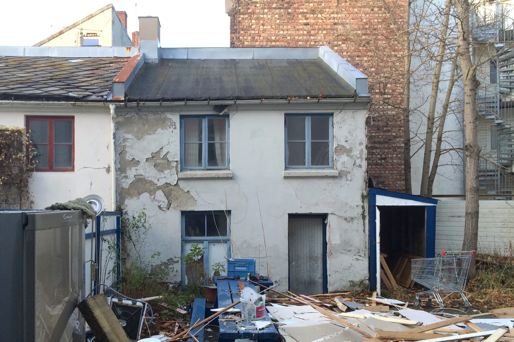
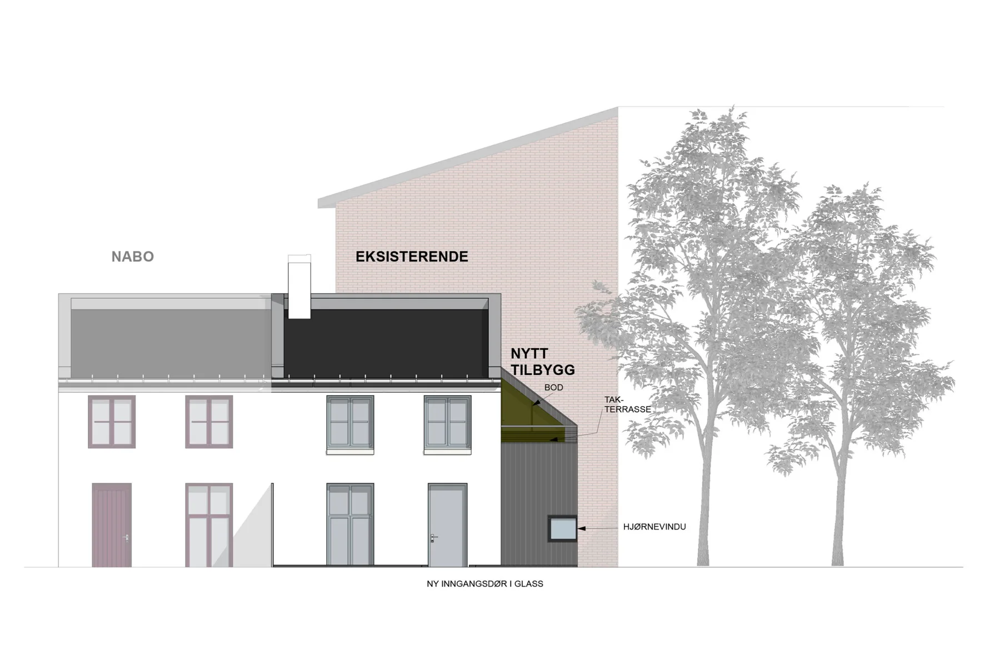
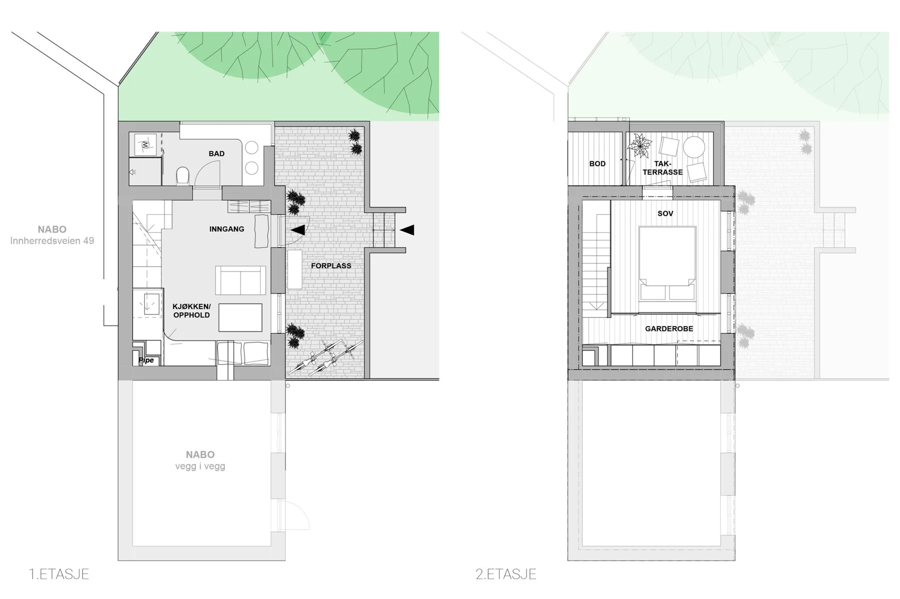

Nedre Møllenberg gate 88
20Bakgårdsbygning
Bolig · fritid · Nybygg · AntikvariskSe bildegalleri

- Byggherre
- Zolen & Månen
- Byggeår
- 2019
- Medarbeidere
- Marianne L. Sørstrøm
Om prosjektet
En mindre teglbygning i bakgården på Møllenberg er utgangspunktet for prosjektet. Tilkomsten gjennom portrom og gårdsrom, den eksisterende kvartalsstrukturen og materialene danner rammene for ombyggingen.
Bilder & tegninger6 bilder



Forstørr

Forstørr

Forstørr

Forstørr

ForstørrBakgråden i Nedre Møllenberg gate 88. Foto: EM1 avd. Trondheim. · Det ferdigrenoverte og ombygde bakgårdsbygget. Foto: EM1 avd. Trondheim. · By night. Foto: EM1 avd. Trondheim.
La oss begynne med en samtale